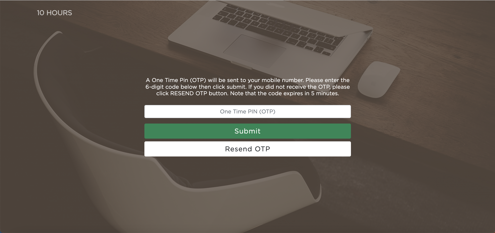

Created a Game Registration System for a specific game called Yggdra Rebirth, published in September 2024 using Ruby on Rails UI and Backend.
Transformed the existing system into the Laravel Framework connected to the game API, integrating player registration directly with the in-game system.
Developed a Webshop Platform using Xsolla as a monetization service, implementing payment gateways and in-game item listings for purchase.
Built an Admin Dashboard to monitor users, sales, and analytics, using Highcharts for data visualization and tracking game efficiency.
Technologies: PHP, MySQL, Restful API, JavaScript, JQuery, Vue.js, AWS S3, MariaDB, Git, PostgreSQL, Ruby, Rails.
Frameworks: Laravel, Vue, and Nuxt.js
Independently developed a Human Resource Software with Payroll Management, Timekeeping, and Employee Data Management.
Upgraded a Recruitment Website from a third-party platform to a self-managed WordPress CMS with a custom backend API built in PHP.
Created, managed, and supported a Virtual Event Platform that hosted 30+ events and handled over 5,000 concurrent users.
Supported the backend of an e-commerce web application running on Magento.
Built a Queueing System for Globe Events, improving on-site customer and staff coordination.
Managed and enhanced various microsites, including an Electronic Raffle System and receipt-based platforms, improving participation and prize distribution workflows.
Earned a certificate from Republic Polytechnic, Singapore, after training in Dartfish Software for motion tracking; developed small Dartfish projects and trained company personnel.
Developed a Coffee Pickup project using Google Maps API and Places API to locate nearby coffee shops for mobile orders.
Created a Hotel Voucher System (similar to Klook) where customers can buy and redeem vouchers using OTP-based mobile authentication.
Assisted partners in developing modules for their Account Information System for Local Government Units.
Technologies: PHP, MySQL, Restful API, JavaScript, JQuery, Vue.js, Socket.io, WordPress, Docker, AWS (S3, SES, Redis), MariaDB, Git, PostgreSQL.
Frameworks: Laravel and CodeIgniter
Independently developed the frontend and backend of an Asset Management & Inventory Web App for IT administrators and support staff.
Provided technical support across the company, assisting with IT-related troubleshooting and system maintenance.
GWA: 1.76
Managed and enhanced various microsites, including an Electronic Raffle System and revamped receipt-based platforms. Facilitated seamless participation and prize distribution, optimizing user experience.
Independently developed a Human Resource Software with Payroll Management, Timekeeping, and Employee Data Management.
Upgraded a Recruitment Website from a third-party managed site to an independently managed Wordpress with CMS and a backend API running on PHP. Visit Asia Select Website: Click here
Created, managed, and supported a Virtual Event Platform has hosted 30+ events and can handle more than 5000 users at a time. Visit LIVEPH Website: Click here
Earned a certificate from Republic Polytechnic, Singapore, following comprehensive training in Dartfish Software for motion tracking. Developed and presented small Dartfish projects to small companies, and subsequently trained three personnel on the software based on the knowledge gained during the Singapore training. Visit Dartfish Website: Click here
Create a hotel voucher system like Klook where customers can buy vouchers and claim vouchers for free. This web application uses only mobile numbers for logging in with OTP integration.
Created a Queueing System for Globe Event for customers and staff that is assigned in the event.